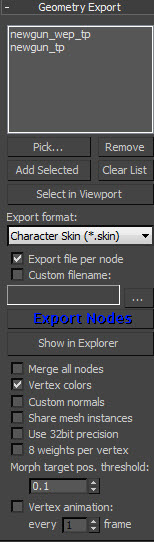
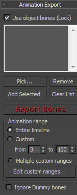
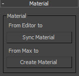
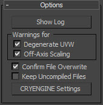
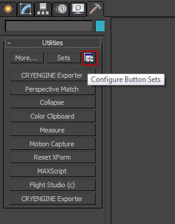
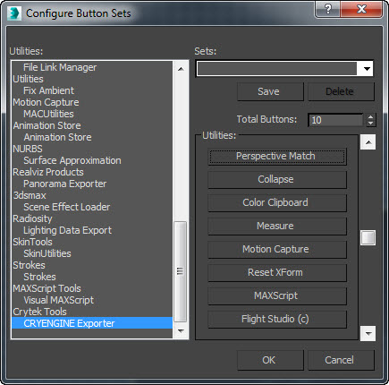

Обзор
В этой статье рассказывается об использовании средства экспорта CRYENGINE UI в 3ds Max.
Экспорт геометрии
Экспорт геометрии Панель содержит параметры для указания того, какие узлы сцены необходимо экспортировать, а также другие параметры, касающиеся того, как они будут экспортироваться. Большинство из этих параметров актуальны только в том случае, если экспортируется геометрия (при экспорте анимации они не важны).
Самый важный элемент управления — это список узлов. Эта опция расположена в верхней части панели и показывает узлы, выбранные для экспорта. Чтобы добавить узел в список, выберите значок узел и нажмите Добавить выбранное. Обратите внимание: если у узлов в списке есть дочерние узлы, они также будут экспортированы.
Под списком узлов находится раскрывающийся список с надписью Формат экспорта который позволяет пользователю выбрать тип файла для экспорта. На панели «Экспорт геометрии» есть и другие параметры.

Вариант | Описание |
|---|---|
| Выбрать | Позволяет выбирать узлы по отдельности в окне просмотра. |
| Удалить | Позволяет удалить узлы из списка узлов. |
| Добавить выбранное | Позволяет добавить выбранные узлы из области просмотра. Вы также можете выбрать весь объект и добавить все узлы в окно выбора. |
| Очистить список | Удаляет все узлы из списка. |
| Выбрать в видовом экране | Выделяет выбранные узлы на сцене. Вам необходимо выбрать узел в список узлов, чтобы выделить его. |
| Формат экспорта | Позволяет сохранять узлы в следующих форматах:
|
| Экспортировать файл на узел | Экспортирует каждый узел в списке экспорта как отдельный файл. Имя файла генерируется из имени узла. |
| Пользовательское имя файла | Переопределяет имя файла экспорта по умолчанию. Не работает, если Экспорт файла для каждого узла флажок установлен. |
| Объединить все узлы | Компилирует всю геометрию из разных узлов в один узел, что повышает эффективность. Это поддерживается только для геометрии без оболочки. Дополнительную информацию об объединении всех узлов см. здесь. |
| Цвета вершин | Позволяет сохранять цвета вершин. |
| Пользовательские нормали | При выборе используется Mikktspace для расчета касательного пространства. |
| Поделиться экземплярами сетки | Включает узлы для совместного использования сетки в CGF wкогда два узла делят сетку в Max. |
| Используйте 32-битную точность | Сохраняет позиции вершин, используя 32 бита на координату. |
| 8 весов на вершину | Позволяет вершине подвергаться влиянию 8 костей. |
| Морфировать целевую поз. порог | Игнорирует вершины, которые не перемещаются на расстояние (в метрах), указанное в этом поле, при экспорте цели морфинга. |
Экспорт анимации
Эта панель содержит настройки скелета модели. Это важно как в случае экспорта моделей со скинами, так и для их анимации. В частности, он содержит элемент управления, в котором перечислены кости скелета. Обратите внимание, что все дочерние кости в этом списке автоматически экспортируются; поэтому необходимо отображать только корневые кости.
Обычно, когда узел добавляется в список узлов, его корневая кость скелета добавляется в список костей. Это означает, что обычно нет необходимости иметь дело с панелью «Экспорт анимации». Однако иногда полезно иметь возможность напрямую манипулировать этим; например, когда пользователь хочет экспортировать анимацию только для верхней части тела.
Другие параметры на этой панели — это параметры экспорта анимации. На следующем изображении показана панель «Экспорт костей».

Вариант | Описание |
|---|---|
Не обращайте внимания на чайников | Предотвращает экспорт любых фиктивных объектов, находящихся в иерархии костей. |
Диапазон анимации | Позволяет выбрать весь диапазон или введите собственный диапазон для экспорта. |
Разные настройки и инструменты
На следующих изображениях показаны доступные различные настройки и инструменты.

Вариант | Описание |
|---|---|
Синхронизировать материал | Обновляет настройки в материале 3ds Max, чтобы они соответствовали настройкам в материале движка (файл .mtl), используемом для этого объекта. |
Создать материал | Создает файл MTL с настройками, соответствующими тем, которые используются в материале 3ds Max. |

| Вариант | Описание |
|---|---|
| Дегенерат UVW | Проверяет вырожденные координаты текстуры и выдает предупреждение, если они существуют. Вырожденные координаты — это когда две вершины треугольника имеют одинаковые (или почти одинаковые) UV. |
| Внеосевое масштабирование | Проверяет, масштабируется ли узел по неосновной оси. Узел все еще можно экспортировать, но масштаб не будет соответствовать объекту в 3ds Max. |
| Подтвердите перезапись файла | Отображает предупреждение пользователю о том, что он собирается перезаписать существующий файл. |
| Сохраняйте некомпилированные файлы | Позволяет сохранить некомпилированные файлы *.cgf как отдельный файл. |
| CRYENGINE Настройки | Запускает диспетчер настроек CRYENGINE. |
| Показать журнал | Запускает окно журнала. |
Эти панели контролируют различные другие аспекты процесса экспорта. Обычно их можно оставить со значениями по умолчанию. Некоторые из их приложений перечислены в отдельных процедурах экспорта, описанных ниже.
Вы также захотите обратиться к Инструмент физического прокси это дополнительный инструмент, доступный пользователям 3ds Max.
Показ средства экспорта CRYENGINE
Чтобы экспортер CRYENGINE был виден в Max, вам необходимо настроить наборы кнопок для отображения экспортера.
В Утилиты вкладку, нажмите на Настройка наборов кнопок значок и назначьте кнопку значку CRYENGINE Экспортер в Настройка наборов кнопок окно.
Настройка средства экспорта CRYENGINE 
Когда вы установили Exporter (используя CryToolsInstaller), экспортер CRYENGINE должен появиться внизу списка.

Просто перетащите его из списка слева и добавьте в список. Утилиты список справа. Вы можете добавлять, удалять или переставлять кнопки.
Обратите внимание на Всего кнопок возможно, потребуется увеличить, если вы уже достигли максимально разрешенного количества кнопок.